In this chapter, we will demonstrate how relatively simple ggplot2 code can create insightful and aesthetically pleasing plots.
As motivation we will create plots that help us better understand trends in world health and economics.
As we go through our case study, we will describe relevant general data visualization principles and learn concepts such as faceting, time series plots, transformations, and ridge plots.
Case study 1
Hans Rosling was the co-founder of the Gapminder Foundation, an organization dedicated to educating the public by using data to dispel common myths about the so-called developing world.
The organization uses data to show how actual trends in health and economics contradict the narratives that emanate from sensationalist media coverage of catastrophes, tragedies, and other unfortunate events.
Case study 1
As stated in the Gapminder Foundation’s website:
Journalists and lobbyists tell dramatic stories. That’s their job. They tell stories about extraordinary events and unusual people. The piles of dramatic stories pile up in peoples’ minds into an over-dramatic worldview and strong negative stress feelings: “The world is getting worse!”, “It’s we vs them!”, “Other people are strange!”, “The population just keeps growing!” and “Nobody cares!”.
We use data to attempt to answer the following two questions:
Is it a fair characterization of today’s world to say it is divided into western rich nations and the developing world in Africa, Asia, and Latin America?
Has income inequality across countries worsened during the last 40 years?
Case study 1
To answer these questions, we will be using the gapminder dataset provided in dslabs.
When the points are regularly and densely spaced, as they are here, we create curves by joining the points with lines, to convey that these data are from a single series, here a country:
This is particularly helpful when we look at two countries.
countries <-c("South Korea", "Germany") gapminder |>filter(country %in% countries) |>ggplot(aes(year,fertility)) +geom_line()
Time series plots
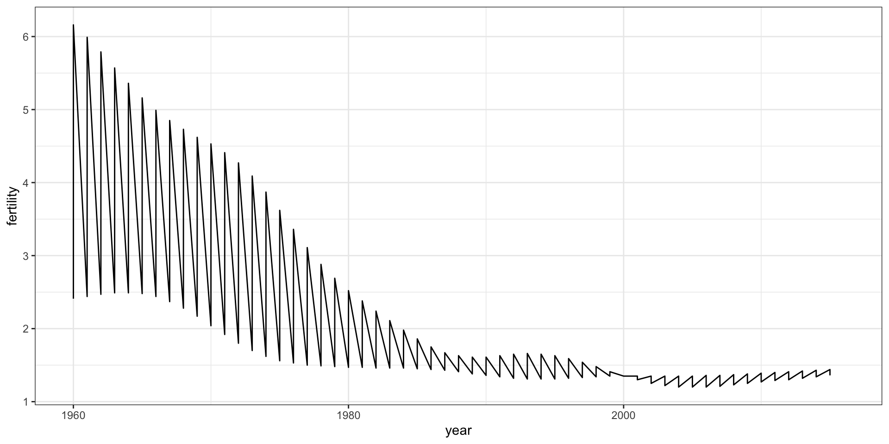
Time series plots
This is not the plot that we want.
To let ggplot know that there are two curves that need to be made separately, we assign each point to a group, one for each country:
countries <-c("South Korea","Germany") gapminder |>filter(country %in% countries &!is.na(fertility)) |>ggplot(aes(year, fertility, group = country)) +geom_line()
Time series plots
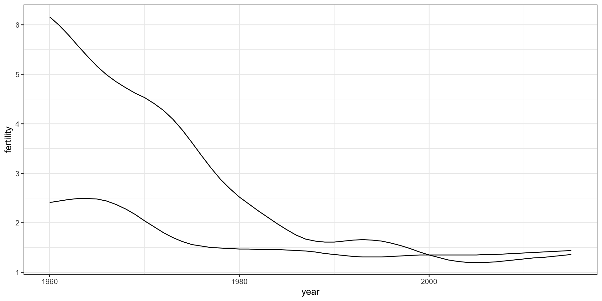
Time series plots
But which line goes with which country? We can assign colors to make this distinction.
countries <-c("South Korea","Germany") gapminder |>filter(country %in% countries &!is.na(fertility)) |>ggplot(aes(year,fertility, col = country)) +geom_line()
Time series plots
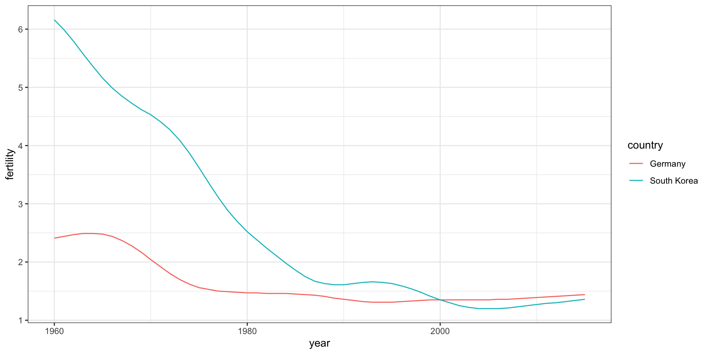
Time series plots
We define a data table with the label locations and then use a second mapping just for these labels:
It might be more informative to quickly be able to see how many countries have average daily incomes of about $1 (extremely poor), $2 (very poor), $4 (poor), $8 (middle), $16 (well off), $32 (rich), $64 (very rich) per day.
Here is the distribution if we apply a log base 2 transform:
gapminder |>filter(year == past_year &!is.na(gdp)) |>ggplot(aes(log2(dollars_per_day))) +geom_histogram(binwidth =1, color ="black")
Log transformation
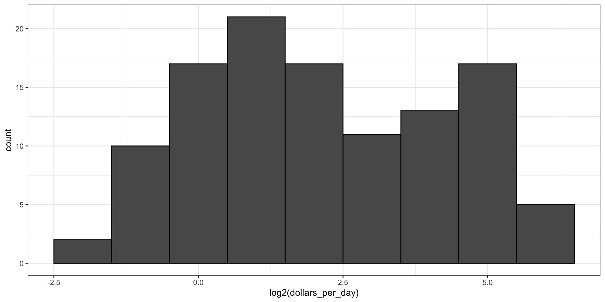
Which base?
In the dollars per day example, we used base 2 instead of base 10 because the resulting range is easier to interpret.
The range of the untransformed values is 0.327, 48.885.
In base 10, this turns into a range that includes very few integers: just 0 and 1.
With base 2, our range includes -2, -1, 0, 1, 2, 3, 4, and 5.
Which base?
It is easier to compute \(2^x\) and \(10^x\) when \(x\) is an integer and between -10 and 10, so we prefer to have smaller integers in the scale.
Another consequence of a limited range is that choosing the binwidth is more challenging.
With log base 2, we know that a binwidth of 1 will translate to a bin with range \(x\) to \(2x\).
Which base?
For an example in which base 10 makes more sense, consider population sizes:
gapminder |>filter(year == past_year) |>ggplot(aes(log10(population))) +geom_histogram(binwidth =0.5, color ="black")
Which base?
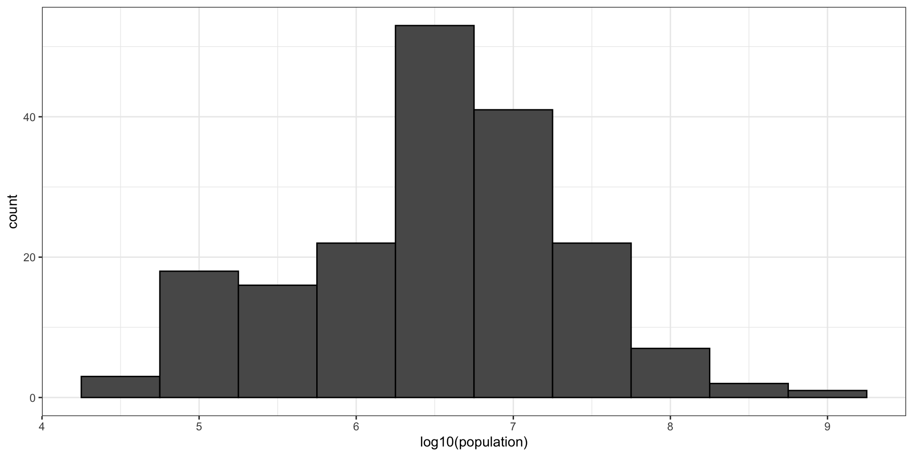
Transform values or scale?
Suppose we define \(z = \log10(x)\) and want to know what is the value of \(z\) if we see it at the mark ^:
----1----^----2--------3----.
We know that the \(z\) is about 1.5.
But what If the scales are logged, what value of \(x\) marked by ^?
----10---^---100------1000---
We need to compute \(10^{1.5}\), which is a bit of extra work.
Transform values or scale?
However, the advantage of showing logged scales is that the original values are displayed in the plot, which are easier to interpret.
For example, we would see “32 dollars a day” instead of “5 log base 2 dollars a day”.
Transform values or scale?
To show logged sclaes, instead of logging the values first, we apply this layer:
gapminder |>filter(year %in% years & country %in% country_list) |>mutate(west =ifelse(group =="West", "West", "Developing")) |>ggplot(aes(dollars_per_day)) +geom_histogram(binwidth =1, color ="black") +scale_x_continuous(trans ="log2") +facet_grid(year ~ west)
Case study 1
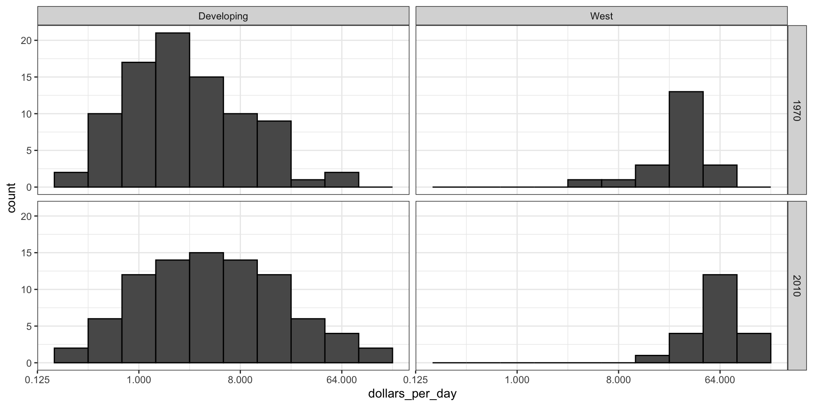
Case study 1
To see which specific regions improved the most, we can remake the boxplots we made above, but now adding the year 2010 and then using facet to compare the two years.
gapminder |>filter(year %in% years & country %in% country_list) |>mutate(group =reorder(group, dollars_per_day, FUN = median)) |>ggplot(aes(group, dollars_per_day)) +geom_boxplot() +theme(axis.text.x =element_text(angle =90, hjust =1)) +scale_y_continuous(trans ="log2") +xlab("") +facet_grid(. ~ year)
Case study 1
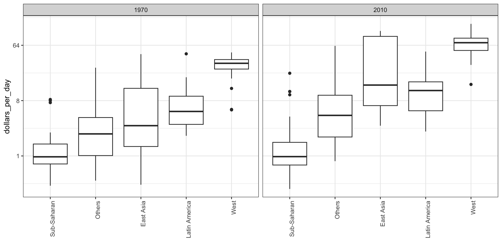
Case study 1
To add color:
gapminder |>filter(year %in% years & country %in% country_list) |>mutate(group =reorder(group, dollars_per_day, FUN = median),year =factor(year)) |>ggplot(aes(group, dollars_per_day, fill = year)) +geom_boxplot() +theme(axis.text.x =element_text(angle =90, hjust =1)) +scale_y_continuous(trans ="log2") +xlab("")
Case study 1
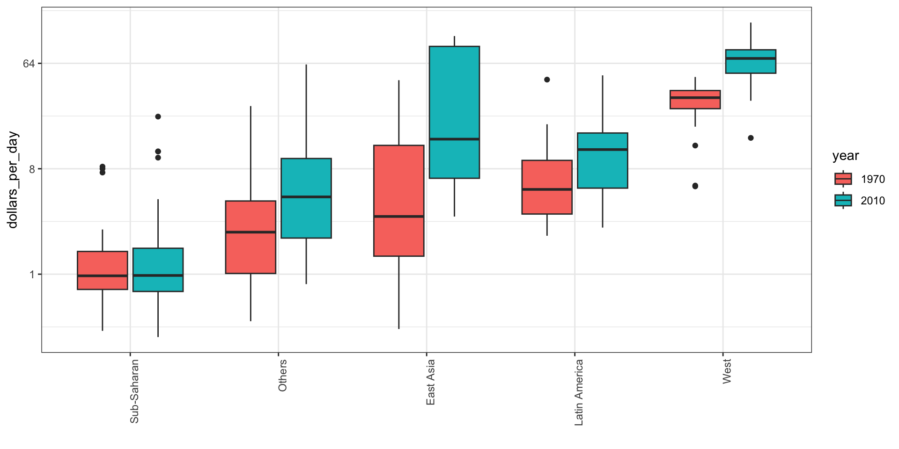
Case study 1
Let’s start by noting that density plots for income distribution in 1970 and 2010 deliver the message that the gap is closing:
gapminder |>filter(year %in% years & country %in% country_list) |>ggplot(aes(dollars_per_day)) +geom_density(fill ="grey") +scale_x_continuous(trans ="log2") +facet_grid(. ~ year)
Case study 1
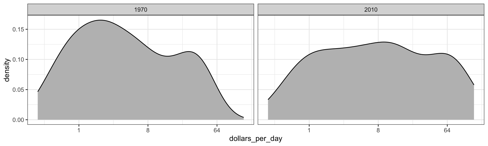
Accessing computed variables
Use after_stat to access density.
p <- gapminder |>filter(year %in% years & country %in% country_list) |>mutate(group =ifelse(group =="West", "West", "Developing")) |>ggplot(aes(dollars_per_day, y =after_stat(count), fill = group)) +scale_x_continuous(trans ="log2", limits =c(0.125, 300)) p +geom_density(alpha =0.2) +facet_grid(year ~ .)
Accessing computed variables
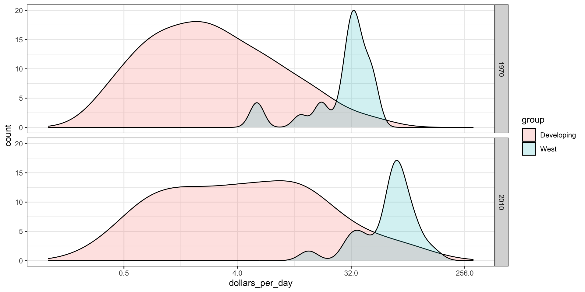
Changing smoothness
We can change the smoothness. We selected 0.75 after trying out several values.
p +geom_density(alpha =0.2, bw =0.75) +facet_grid(year ~ .)
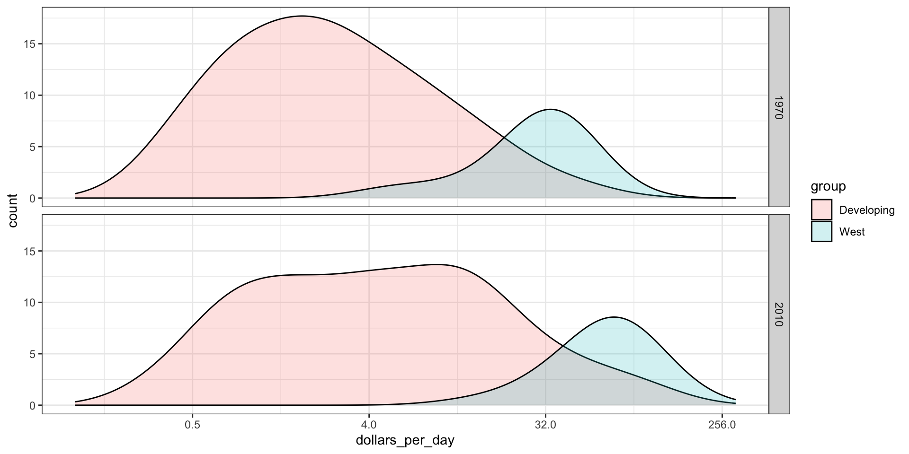
Multiple ridge plot
To visualize if any of the groups defined above are driving this we can quickly make a ridge plot:
gapminder |>filter(year %in% years &!is.na(dollars_per_day)) |>mutate(group =reorder(group, dollars_per_day, FUN = median)) |>ggplot(aes(dollars_per_day, group)) +scale_x_continuous(trans ="log2") +geom_density_ridges(bandwidth =1.5) +facet_grid(. ~ year)
Multiple ridge plot
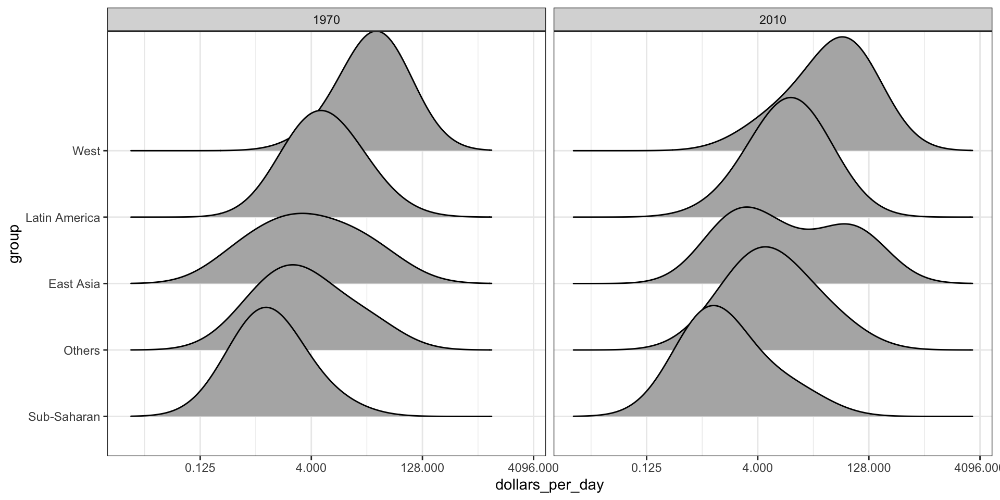
Stacking densities
Another way to achieve this is by stacking the densities on top of each other:
gapminder |>filter(year %in% years & country %in% country_list) |>group_by(year) |>mutate(weight = population/sum(population)*2) |>ungroup() |>ggplot(aes(dollars_per_day, fill = group)) +scale_x_continuous(trans ="log2", limits =c(0.125, 300)) +geom_density(alpha =0.2, bw =0.75, position ="stack") +facet_grid(year ~ .)
Stacking densities
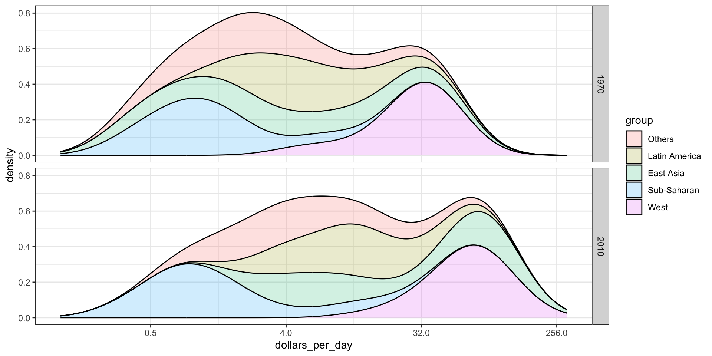
Weighted densities
Here we weigh the countries by size:
gapminder |>filter(year %in% years & country %in% country_list) |>group_by(year) |>mutate(weight = population/sum(population)*2) |>ungroup() |>ggplot(aes(dollars_per_day, fill = group, weight = weight)) +scale_x_continuous(trans ="log2", limits =c(0.125, 300)) +geom_density(alpha =0.2, bw =0.75, position ="stack") +facet_grid(year ~ .)